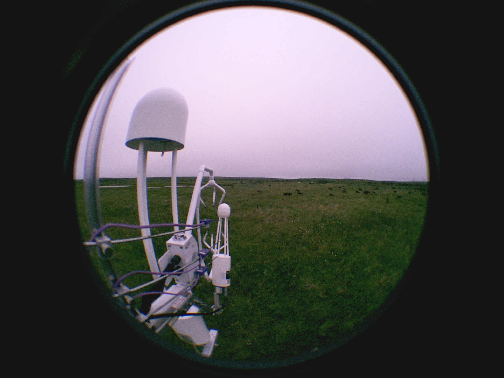
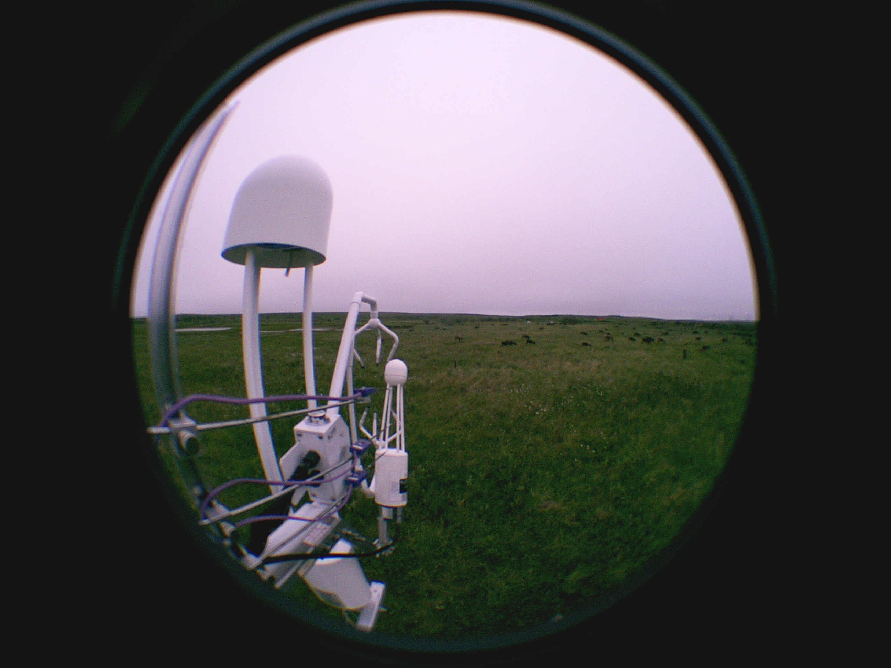
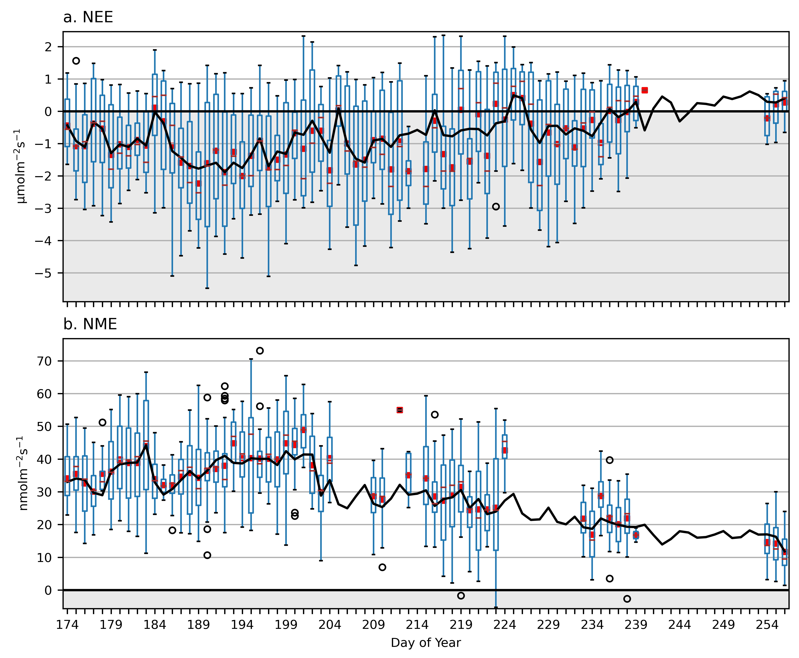
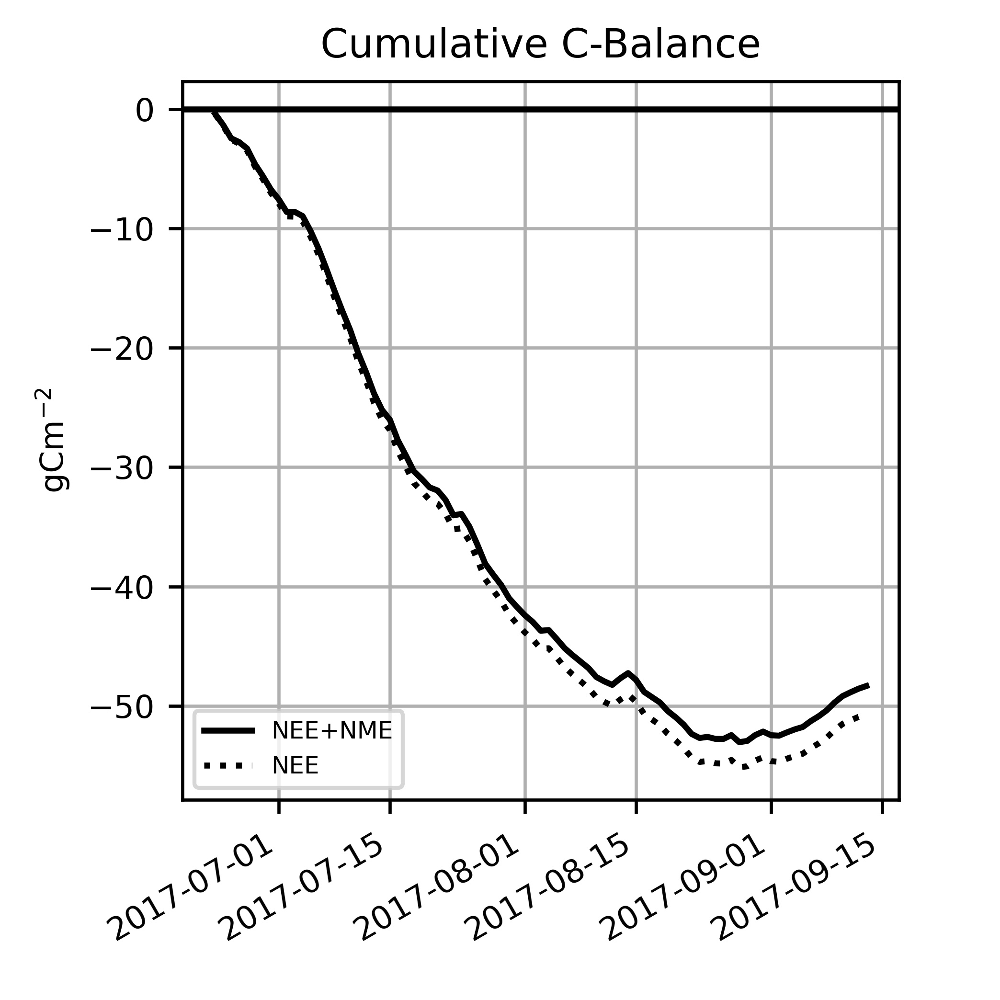

Using Machine Learning to Identify and Map Controls of Growing-Season Carbon Dioxide and Methane Fluxes in the Mackenzie Delta Region
June Skeeter
PhD Thesis Defense
UBC Geography Department
Territorial Acknowledgement
To start, I want to acknowledge the Indigenous territories on which this work took place.
- During my PhD, I have been I living and working in unceded Coast Salish territory. Specifically, the:
- xʷməθkʷəy̓əm, Tsleil-Waututh, Stó:lō, and Skwxwú7mesh Nations
- Field work in 2016 and 2017 was conducted in the Inuvialuit Settlement Region.
Overview
- Introduction
- Framing the Problem
- Tundra Carbon Fluxes
- Flux Observations & Machine Learning
- The Study Area
- Research Objectives
- Data Collection & Analysis
- Measurement Campaigns at Illisarvik & Fish Island
- Flux Processing, Gap Filling, Feature Detection
- Flux Upscaling
- Discussion & Conclusions
- Novel Contributions & Implications of Findings
- Future Research Areas
- Reflections
Framing the Problem
Arctic amplification is accelerating climate change in the northern high latitudes, leading to:
- Decreased snow and ice cover
- Changing precipitation patterns
- Permafrost degradation
- Extending growing seasons
- Changing carbon (C) balances
- Influences the rate of warming globally
Framing the Problem
Eddy covariance (EC) is a method to measure carbon dioxide (CO2) and methane (CH4) fluxes.
- Sparse coverage in the Arctic
- Bias towards accessible sites
- Canadian Arctic is under-represented
- Ecosystems characterized by limited productivity
- Latitudinal gradient
- Modulated by elevation and maritime influences
 Data Sources: Walker et al. (2005); Pallandt et al. (2021)
Data Sources: Walker et al. (2005); Pallandt et al. (2021)
Tundra Carbon Balance
Harsh conditions limit vegetation height, biomass is concentrated below the surface.
- Permafrost prevents decomposition
- The active layer thaws seasonally, allowing root growth and microbial activity
- Restricted drainage causes elevated water tables , inhibiting decomposition


Tundra Carbon Balance
Net Ecosystem Exchange (NEE) of CO2 is the primary component of the tundra C balance.
- NEE = ER - GPP
- Gross Primary Productivity (GPP)
- Photosynthetic uptake of CO2
- Ecosystem Respiration (ER)
- Autotrophic (RA) + Heterotrophic (RH)
- Negative/positive NEE indicate CO2 uptake/emission by the ecosystem.
Tundra Carbon Balance
Net Methane Exchange (NME) is a secondary component in tundra wetlands.
- Methanogenesis occurs in anoxic soils
- CH4 is a potent greenhouse gas, but the rate of decomposition is slower
- Methanotrophs convert CH4 to CO2 in aerobic soils
- Negative/positive NME indicate CH4 uptake/emission by the ecosystem.
Seasonal Dynamics
The majority of annual C exchange occurs during the brief growing season when plants are active.
- Rapid green up after snowmelt in May/June
- Senescence begins in late August
- Photosynthesis decreases, root growth and microbial activity continue
- Winter freeze up gradually reduces soil respiration
Mackenzie Delta, NWT 69° N 134° W

The Study Area
The Mackenzie Delta (13,000 km2 ) is the 2nd largest Arctic Delta.
- One of the fastest warming regions in North America
- No existing studies of NEE in the Delta
- Aircraft observations of NME (Kohnert et al. 2017 & 2018)
- Gas hydrate seeps in south / west
- Significant biologic emissions north of tree line (31.8 - 58.4 mg CH4 m−2 d−1)

The Study Area
We measured CO2 and CH4 fluxes with at two tundra sites.
- Illisarvik is a Drained Thermokarst Lake Basin (DTLB) on Richards Island
- Experimentally drained in 1978
- Undisturbed Low center polygon (LCP) tundra on the Big Lake Delta Plain
- Permafrost peatland that experiences infrequent episodic flooding
Machine Learning
Algorithms that build models from experience without making prior assumptions about the distribution of a dataset.
- Gap filling is essential when working with EC data because flux estimation requires specific conditions that can't always be met
- Stationarity, turbulent flow, etc.
- Flux partitioning is the standard approach for NEE, not practical during polar summer
- No standard gap filling method for NME
- Machine learning methods can identify flux drivers and map flux responses
Machine Learning
Random Forests (RF) are ensembles of bootstrapped regression trees which can be trained quickly and easily deployed.
- Two key drawbacks: incapable of extrapolation, no interpretable response functions
Neural Networks (NN) are non-linear regression models which can approximate any continuous function and extrapolate beyond their training domain.
- Computationally intensive and care must be taken to prevent over fitting
- Weights method (Gevery et al. 2003) allows inspection of response functions to verify relationships are physically plausible
Research Objectives
Advance our understanding of the dynamics governing growing season C exchange in the Mackenzie Delta Region.
- Measure growing season CO2 and CH4 fluxes at Illisarvik and Fish Island, use gap-filling to estimate NEE and NME, and quantify the portion of CO2 uptake offset by CH4 emissions at both sites.
- Use NN models to gain insight into the controls of ecosystem scale NEE and NME at Illisarvik and Fish Island.
- Identify bio-climate drivers and map their functional relationships.
- Investigate the influence of spatial heterogeneity over fluxes.
- Investigate inter-annual climate variability at Fish Island and conduct a temporal upscaling experiment to estimate the possible influence of variability on growing season NEE and NME.
Chapter 2: Vegetation influence and environmental controls on greenhouse gas fluxes from a drained thermokarst lake in the western Canadian Arctic
A version of chapter 2 has been published in Biogeosciences
https://doi.org/10.5194/bg-17-4421-2020
Data & Methods
EC system collected 10 Hz flux data from July 8th to August 7th, 2016.
- CSAT3, LI 7500 (CO2) and LI 7700 (CH4) mounted at zm = 3 m
- Fluxes calculated with EddyPro, post processing included:
- QC filtering(Mauder and Foken 2004)
- Storage correction, u* filtering (0.1ms-1), & spike removal (Papale et al. 2006)
- Collocated climate & soil sensors
 

Data & Methods
A vegetation survey (Wilson et al. 2019) mapped the basin and a footprint model (Kljun et al. 2015) was used to calculate half-hourly source area fractions.
| Class | Species | Basin | Fclim[range] |
|---|---|---|---|
| Shrub | Salix spp. & Alnus viridis | 48% | 36%[0–79] |
| Sedge | Carex aquatilis & Arctophila fulva | 29% | 39%[1–78] |
| Grass | Pocacea spp. & Eriophorum angustifolium | 12% | 11%[0–56] |
| Sparse | Sparse veg. & bare ground | 8% | 2%[0–34] |
| Water | Hippuris vulgaris & Open Water | 3% | 0%[0–4] |
| Upland | Salix spp. & Betula nana | 0% | 6%[0–15] |
Data & Methods
Dark chambers measured ER and NME at 10 plots


Data & Methods
NN models were used to identify the dominant flux drivers and gap fill the flux data to estimate NEE and NME
- Climate, soil, and source area used as inputs
- Iteratively built more complex models
- Final model selected using 1-SE rule
Results
Observations at Illisarvik during the peak growing season in 2016.
- The site was a net CO2 sink
- NEE: -1.5 CI95% ±0.2 g C-CO2 m-2d-1
- NN in good agreement with FCO2 observations (r2 = 0.91)
- The site was a weak CH4 source
- NME: 8.7 CI95% ±0.4 mg C-CH4 m-2d-1
- NN in reasonable agreement with FCH4 observations (r2 = 0.62)

Results
Visualizing response functions by mapping fluxes over driver domains and plotting their derivatives.
- The NN analysis identified four key divers of NEE
- PPFD and VPD were the primary drivers of GPP
- VWC and Shrub fraction influenced ER
- Source area had a relatively minor influence over CO2 fluxes

Results
The NN analysis identified five key divers of NME.
- Source area (Sedge %) was the primary determinant of CH4 fluxes
- VWC and Ts drove fluxes
- Shape of response functions differed by source area
- Supported by chamber observations
- Sedge CH4 emissoins were an order of magnitude higher
- Upland were CH4 sinks

Discussion & Conclusions
Presently, peak growing season carbon uptake at Illisarvik is greater than similarly aged landscape features in Alaska.
- NME is below levels observed in other DTLB studied
- The basin at Illisarvik will continue to evolve and the trajectory it takes could significantly alter its carbon balance
- If Illisarvik follows the same trajectory as older DTLB in the area and becomes a sedge wetlands, NME will increase significantly
- If it transitions into a shrub dominated DTLB, NME would remain similar to current levels
- Effects of changing shrub/sedge cover on NEE are less straightforward
- Observation year-round is needed to better understand the implications of vegetation change on the carbon balance of DTLB such as Illisarvik.
Chapter 3: Controls on Carbon Dioxide and Methane fluxes from a Low-Center Polygonal Peatland in the Mackenzie River Delta
A version of chapter 3 has been published in Arctic Science
https://doi.org/10.1139/as-2021-0034
Data & Methods
EC system collected 10 Hz flux data from June 23th to September 13th, 2017.*
- CSAT3, LI 7200 (CO2) and LI 7700 (CH4) mounted at zm = 2.89 m
- Fluxes calculated with EddyPro, post processing included:
- QC filtering(Mauder and Foken 2004)
- Storage correction, u* filtering (0.1ms-1), & spike removal (Papale et al. 2006)
- Collocated climate & soil sensors + dark chambers
Data & Methods
Drone surveys mapped areas within 150 m of the tripod and a footprint model (Kljun et al. 2015) was used to calculate half-hourly source area fractions.
| Class | Species | Distribution | Fclim[range] |
|---|---|---|---|
| Polygon Centers | Sphagnum spp., Equisetum spp., & Carex spp. | 66% | 64%[33–78] |
| Polygon Rims | Salix spp. | 29% | 22%[5–56] |
| Polygon Troughs | Carex spp. & Eriophorum angustifolium | 2% | 2%[0–9] |

Data & Methods
NN models were used to identify the dominant flux drivers and gap fill the flux data to estimate NEE and NME.
- An over-parametrized model (n = 21 climate, soil, and source area used as inputs) was pruned using the weights method (Gevery et al. 2003)
- Inputs with a Relative Importance (RI) < 2.5% were removed and the model was re-trained
- RI is based on the sum of the squared partial derivates
- Plotting the partial derivatives can isolate the response function for each driver
- A one-hot-coded dummy variable was used to distinguish between night/day
- ER was estimated by projecting NEE to PPFD = 0 & Daytime = 0
Results
Conditions over the study season.
- Spring flood on June 1st, followed by rapid green up, senescence began in August as light levels dropped
- Ta ranged between -0.1 and 24.8 °C
- Mean Ta was °10.6 C
- Thaw depths increased steadily
- 20 cm (DOY 174) to 50 cm (DOY 256)
- Water table decreased then increased increased

Results
Fish Island was a net C sink over the 2017 growing season.
- NEE: -0.60 CI95% ±0.04 μmol m-2s-1
- Transitioned to a CO2 source in late August
- NME: 27.7 CI95% ±0.35 nmol m-2s-1
- NME decreased by 50% from mid-July to late-August
- Deil cycle for NEE and NME
- Negative correlation (r2 = 0.40)
- Muted as season progressed


Results
The weights method identified 8 drivers of NEE.
- PPFD controlled of GPP
- Modulated by VPD
- TCnt5 controlled ER
- Modulated by TRim5
- Highlights influence of spatial heterogeneity
- TD and TRim15 mapped seasonality
| Factor | RI | Sign | |
|---|---|---|---|
| 1 | Photon Flux Density (PPFD) | 64% | - |
| 2 | Vapor Pressure Deficit (VPD) | 8% | - |
| 3 | Polygon Center Temp. 5cm (TCnt5) | 7% | + |
| 4 | Thaw Depth (TD) | 7% | - |
| 5 | Day/Night (Daytime) | 6% | - |
| 6 | Polygon Rim Temp. 5cm (TRim5) | 5% | - |
| 7 | Polygon Rim Temp. 15cm (TRim15) | 3% | + |
| 8 | Wind (U) | 1% | - |


Results
NN projections suggest mean ER was 1.54 CI95% ± 0.87 μmol m-2 s-1
- The NN outperformed two common partitioning methods
- Spatial heterogeneity did not have a significant impact on NEE.
- However, the limited chamber samples (2 days) do suggest it influenced ER
| NN | r2 = 0.58 | RMSE = 0.23 μmol m-2 s-1 |
| Q10 | r2 = 0.32 | RMSE = 0.28 μmol m-2 s-1 |
| Logistic | r2 = 0.45 | RMSE = 0.24 μmol m-2 s-1 |

Results
Eight key drivers for NME.
- Controls were more "spread out"
- Rnwas the strongest
- u* and U likely influenced transport
- Thaw depth mapped seasonality
- Source area had some influence
- Plotting the derivatives highlights the response functions
- Projections can give flux estimates for specific conditions
| Rank | Factor | RI | Sign |
|---|---|---|---|
| 1 | Net Radiation (Rn) | 34% | + |
| 2 | Friction Velocity (u*) | 20%% | + |
| 8 | Wind (U) | 17% | - |
| 4 | Thaw Depth (TD) | 12% | - |
| 5 | Polygon Center Temp. 15cm (TCnt15) | 6% | - |
| 6 | Water Table (WTD) | 5% | - |
| 7 | Rim Fraction (FRim) | 4% | + |
| 8 | Center Fraction (FCnt) | 2% | - |


Discussion & Conclusions
Overall, CH4 had a relatively minor impact on net C uptake (-49.5 g C m-2) over the study.
- NME matches well with aircraft measurements in vicinity of Fish Island (Kohnert et al. 2017)
- Spatial heterogeneity had a significant impact on NME
- NEE was more negative than similar landscapes

Chapter 4: Controls on Carbon Dioxide and Methane fluxes from a Low-Center Polygonal Peatland in the Mackenzie River Delta
A version of chapter 4 has been submitted to Arctic Science
Data & Methods
A 11-year climate record from the AWS at Fish Island was paired with ECMWF & satalite data to conduct a temporal upscaling experiment


Data & Methods


Data & Methods

Conclusions
- Both Illisarvik and Fish Island were growing season CO2 sinks. Illisarvik was a weak CH4 source, but with patches of very high fluxes in wet areas dominated by sedges. Fish Island was a moderately strong CH4 source.
- Temporal upscaling indicated significant interannual variability in growing season NEE and NME at Fish Island. Climate warming could reduce the CO2 sink strength of Fish Island. Compared to two similar low center polygon ecosystems with long-term eddy covariance records:
- Fish Island is likely a weaker growing season CO2 sink and stronger growing season CH4 source than a low center polygon ecosystem near Utqiagvik, Alaska.
- Fish Island may be both a stronger growing season CO2 sink CH4 source than a low center polygon ecosystem at Samoylov Island, in the Lena River Delta.
Conclusions
- Spatial heterogeneity was a significant factor influencing carbon fluxes at Fish Island and Illisarvik.
- Both NEE and NME at Illisarvik varied significantly between different vegetation types
- At Fish Island, polygonal microtopography had a significant influence over NME but had no influence over NEE.
- Neural network analysis and footprint modelling can be combined with to help account for, and model the influence of, spatial heterogeneity on eddy covariance flux observations.
Future Research
- Long-term flux data needed.
- Interannual variability is significant.
- Warming may reduce overall sink strenght.
- Cold seson fluxes.
- Significant question mark.
- Extended senescent period could offset much of growing season uptake.
- Methane fluxes.
- Pressure pumping.
- Spatial variability - landscape scale changes.
- Network architecture.
- Multi-layer models to simulate GPP and ER separately.
- Time lagged models.
Reflections
- Future work should focus on sustainable long term monitoring.
- Short, resource intensive campaigns are a missalocation of resources.
- Tens of thousands of dollars worth of equipment, fuel, & labor.
- Only 4 months of flux data.
- Prioritize engagement & involvement of local communities.
- Projects will be sustainable over longer timescales.
- Technical training & employment for communities.